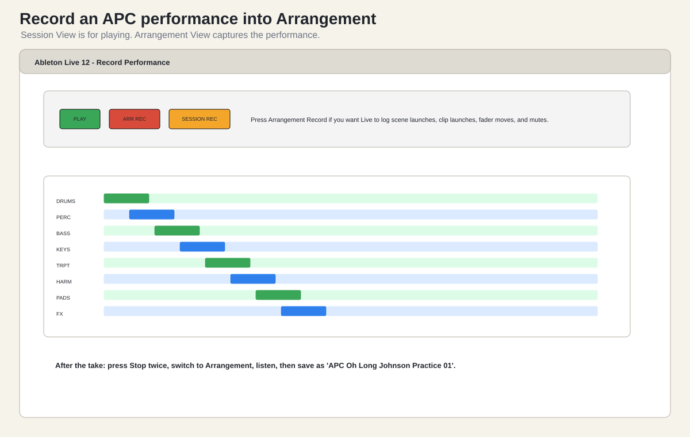

Watch first. Tony Tyson, “A Really Quick Guide To
Using The Akai APC40 MkII”, the arrangement-on-the-fly segment: https://www.youtube.com/watch?v=POb406So534.
Once the practice set works, record one pass into Arrangement
View.
- Save the set as
APC Oh Long Johnson Practice 01.
- Return to Session View.
- Set Global Quantization to
1 Bar.
- Press Stop All Clips.
- Put faders in starting positions.
- Press Arrangement Record in Live or the APC Record button if it is
assigned to Arrangement Record.
- Press Play.
- Perform the five-scene structure.
- Use faders, mutes, sends, and one device rack move.
- Press Stop twice.
- Switch to Arrangement View.
- Listen back.
- Save the set as
APC Oh Long Johnson Practice 01 - recorded.

Recording Session View actions into
Arrangement View.
What Gets Recorded
Arrangement recording can capture:
- scene launches;
- clip launches;
- fader moves;
- track activator changes;
- device macro movements;
- send changes;
- crossfader movement.
This is why the APC matters. You are not only triggering loops. You
are playing the arrangement.